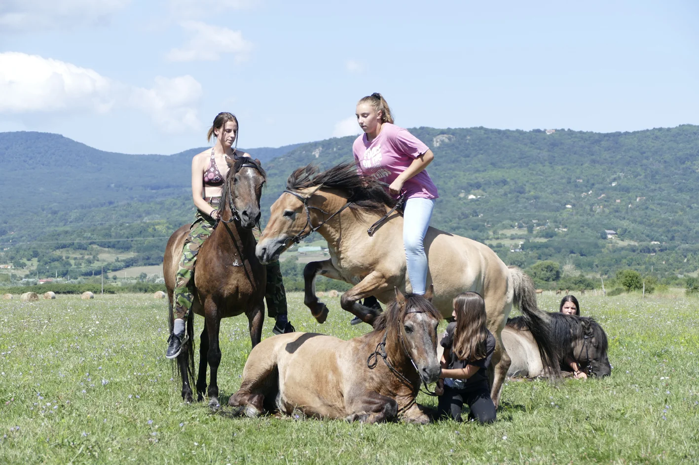
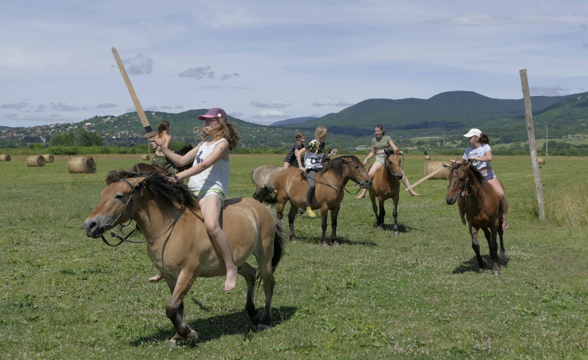
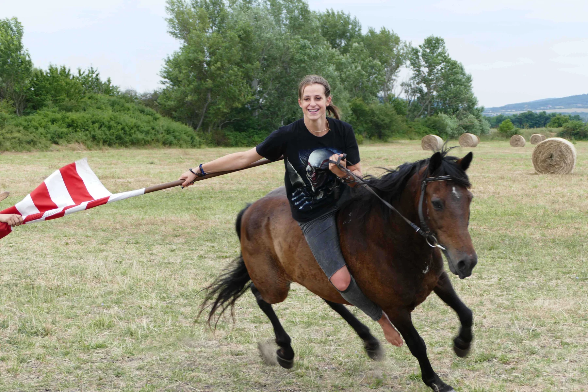
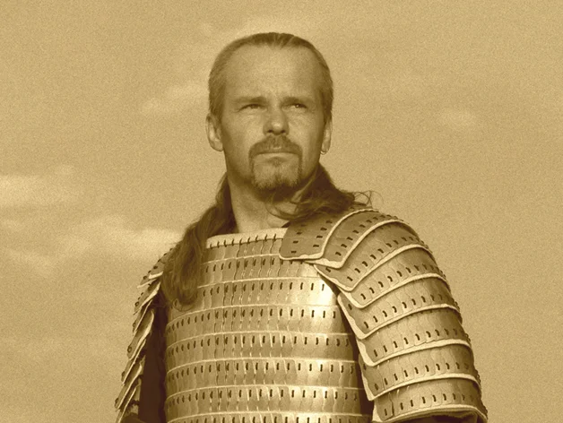
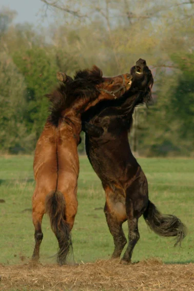
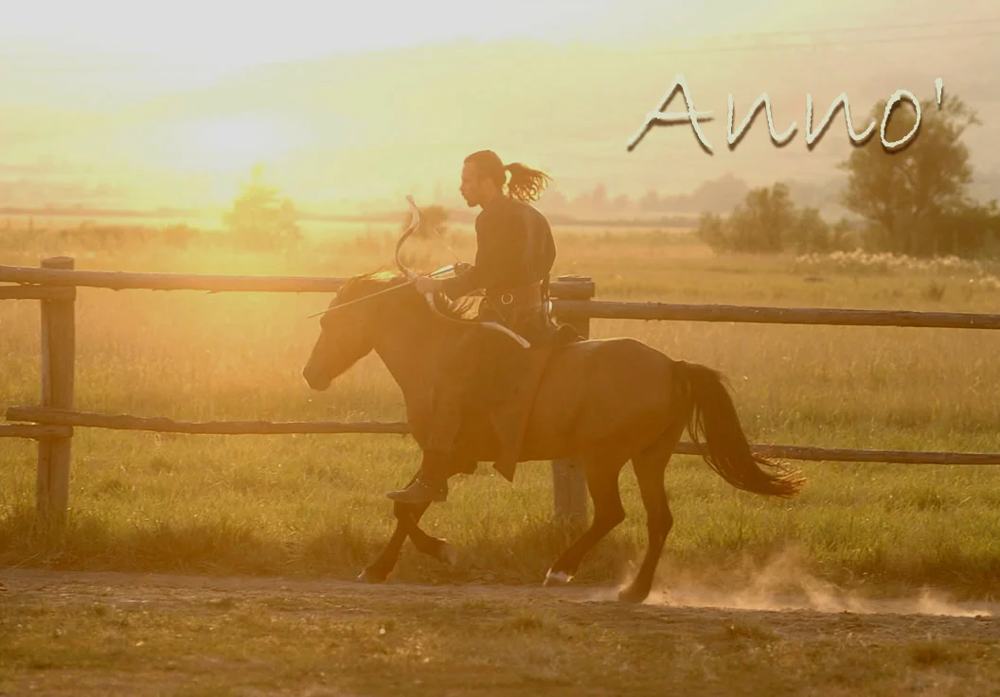
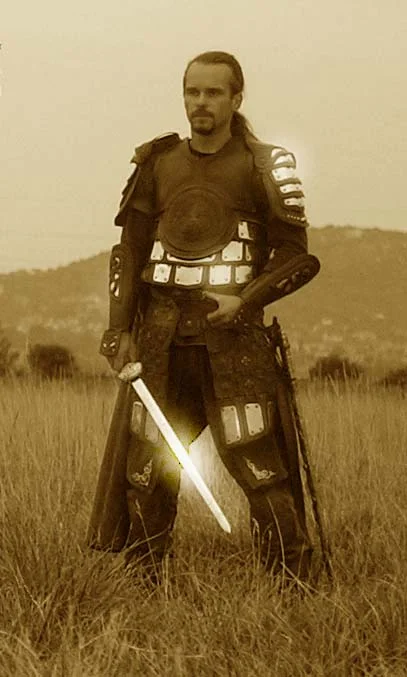
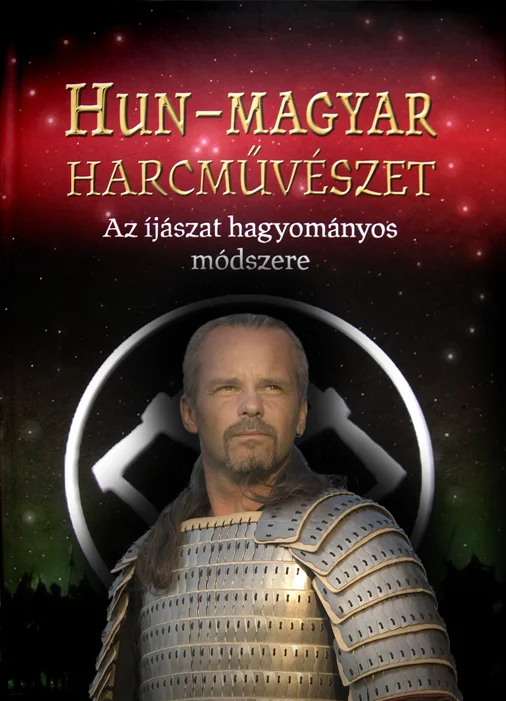

EGYESÜLET
Közhasznú kulturális és sportegyesületként működünk.

Közhasznú kulturális és sportegyesületként működünk.
Elsősorban lovaglást és íjászatot, a ló -használat, -kiképzés, -tartás és a lovas életmód alapjait, valamint egyéb fegyveres és pusztakezes technikákat, lovasíjászatot, a lovasharc alapjait, …

Közhasznú kulturális és sportegyesületként működünk.

A képzéseken való részvétel 8 éves kortól javasolt.

Az íjászat hagyományos módszere

Ló és eszközállományunkat ennek megfelelően válogattuk.


alapító, elnök, szakmai irányító, szervező és oktató
KELEMEN ZSOLT
HUN-MAGYAR HARCMŰVÉSZETAz íjászat hagyományos módszereÍRÁSOKLOVASHARC@GMAIL.HU